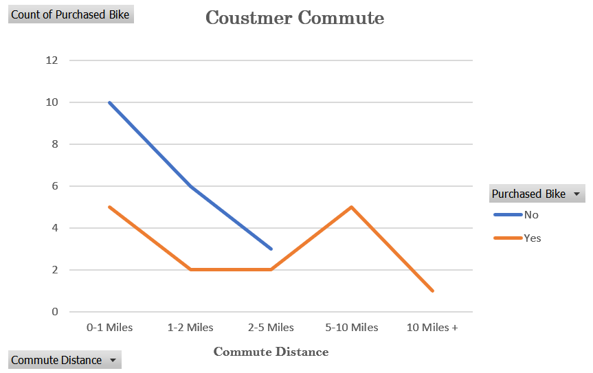

This report analyzes trends in bike purchases based on various demographic factors such as age, gender, marital status, education, and commute distance. The goal is to identify patterns that influence a customer's decision to purchase a bike.
This dashboard provides insights into bike sales trends based on demographic factors like marital status, education, region, and commute distance. It helps identify key patterns in purchasing behavior by visualizing data through interactive filters and charts.
Users can filter the data based on:
These filters dynamically adjust the visualizations to analyze bike sales by different customer segments.
Chart Type: Line Chart
Purpose: Shows how the distance a customer commutes impacts their decision to buy a bike.
Key Insights:
Chart Type: Clustered Bar Chart
Purpose: Displays the number of bikes purchased by male and female buyers.
Key Insights:
TotalPurchases = COUNTROWS(FILTER(BikeData, BikeData[Purchased Bike] = "Yes"))
This formula counts the number of rows where a bike was purchased.
AvgIncome = AVERAGEX(BikeData, BikeData[Income])
This computes the average income for different customer segments.
BikePurchaseRate = DIVIDE([TotalPurchases], COUNTROWS(BikeData))
This calculates the percentage of customers who bought a bike, helping us analyze trends by commute distance.
A bike retail company wants to understand customer purchasing behavior to increase bike sales. The business needs insights into who buys bikes, why they buy, and how different factors (income, gender, education, commute distance, etc.) influence purchases.
This report enables data-driven decision-making to enhance sales strategies and customer engagement in the bike retail business. 🚀
We welcome feedback & contributions to enhance this project!